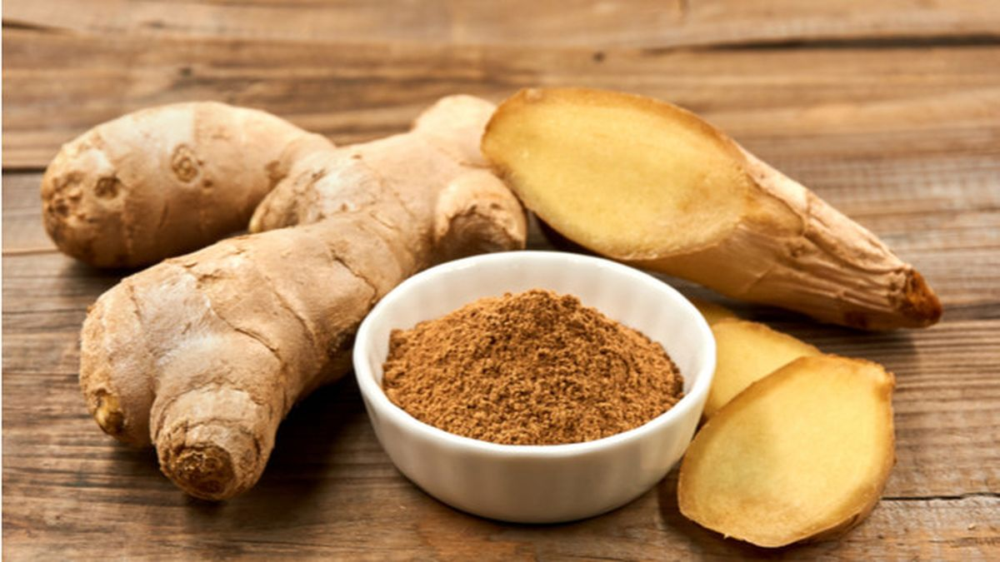

<< Daftar Resep
Mengenal Bahan Makanan
Jahe

Meringankan Nyeri Otot
Jahe mengandung senyawa yang disebut gingerol yang terbukti memiliki efek analgesik dan anti inflamasi. Berdasarkan hasil studi yang diterbitkan dalam The Journal of Pain menemukan mengonsumsi sedikit jahe setiap hari dapat membantu menjaga peradangan tetap rendah dan juga bisa membantu meringankan nyeri otot dari cedera yang disebabkan oleh olahraga. Sebuah penelitian serupa menemukan bahwa jahe yang dikonsumsi setelah latihan olahraga dapat membantu mencegah nyeri otot berkembang dalam beberapa hari setelah latihan.
Meringankan Kram Saat Haid
Beberapa penelitian menunjukkan bahwa jahe sama efektifnya dengan ibuprofen dalam menghilangkan rasa sakit pada wanita dengan dismenore primer. Sebuah analisis terbaru dari semua penelitian yang relevan menyimpulkan bahwa wanita dengan dismenore (nyeri) mungkin merasa lega ketika mengonsumsi jahe tiga hari pertama dari siklus mereka, tetapi penelitian lebih lanjut perlu dilakukan.
Oleh karena itu, jika Anda menderita periode haid yang sangat menyakitkan, ada baiknya menambahkan jahe untuk diet Anda dan lihatlah apakah itu dapat membantu atau tidak.
Membantu Meringankan Rasa Sakit
Akar merupakan bagian dari tanaman yang paling banyak digunakan dalam bentuk pengobatan alternatif karena kaya akan minyak atsiri yang mengandung komponen aktif gingerol. Senyawa anti inflamasi yang manjur ini diyakini dapat menjelaskan mengapa orang-orang dengan osteoarthritis atau rheumatoid arthritis mengalami pengurangan tingkat rasa sakit dan peningkatan dalam mobilitas mereka ketika mereka mengkonsumsi jahe secara teratur. Gingerol sendiri bekerja dengan cara menghambat pembentukan sitokin inflamasi dan juga berperan sebagai pembawa senyawa kimiawi dari sistem kekebalan tubuh.
Menenangkan Sistem Pencernaan
Jahe memiliki sejarah panjang karena sangat efektif digunakan untuk meredakan ketidaknyamanan dan rasa sakit di bagian perut. Untuk mengatasi gangguan pencernaan, jahe bekerja dengan cara memproduksi suatu zat yang dapat mengurangi produksi gas berlebih pada sistem pencernaan. Selain itu, jahe juga bisa digunakan untuk menenangkan saluran usus.
Mengurangi Mual Ringan
Akar jahe dapat dikonsumsi untuk membantu mengurangi gejala yang berhubungan dengan mabuk perjalanan seperti pusing, mual, muntah dan keringat dingin. Selain itu jahe juga bisa digunakan untuk mengobati mual dan muntah yang berhubungan dengan penyakit kehamilan ringan. Namun sebelum mengonsumsinya. tanyakan kepada dokter umum atau bidan untuk memastikan bahwa hal tersebut sesuai untuk Anda.
Mengatasi Peradangan
Komponen pedas dalam jahe yang juga dikenal sebagai oleoresin memiliki efek anti inflamasi terkuat. Jahe dapat menghentikan pelepasan sitokin inflamasi dalam sel imun. Beberapa manfaat jahe lainnya seperti mengurangi rasa sakit, kram, dan radang sendi juga dianggap terkait erat dengan aktivitas anti inflamasi ini.
Menurunkan Gula Darah
Dalam sebuah penelitian tahun 2015 baru-baru ini pada 41 peserta dengan diabetes tipe 2, 2 gram bubuk jahe per hari menurunkan gula darah puasa sebesar 12%. Jahe juga dapat digunakan untuk meningkatkan HbA1c (penanda untuk kadar gula darah jangka panjang) yang mengarah ke pengurangan 10% selama periode 12 minggu.
Kembali